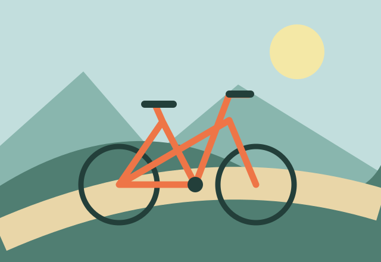

En desarrollo · Vista previa del concepto
Exploración · Sobre ruedas
La ciudad sobre ruedas
La idea: alquilar una bicicleta, orientarte por la ciudad y resolver pequeños imprevistos por el camino. Tus decisiones darán forma al recorrido.
Un mundo con personalidad propia
Azul suave, verde y naranja. Luz de día, formas abiertas y una ciudad que invita a explorar.
Mientras tanto, jugar a La ruta secreta ↗
Esta página presenta la dirección visual de una futura historia. La aventura todavía no está disponible para jugar.